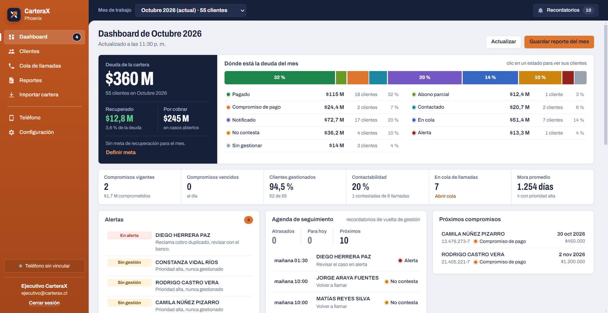

Gestión de cartera y cobranza para ejecutivos Phoenix.
El sistema descrito con el modelo de vistas 4+1 de Kruchten: escenarios, lógica, desarrollo, procesos y física.
| Versión | Fecha | Descripción | Responsable |
|---|---|---|---|
| 1.0 | 30-10-2026 | Versión inicial. Levantada desde el código fuente, el grafo de dependencias del repositorio y la ejecución de las pruebas. | Equipo Phoenix (análisis asistido por Claude Code) |
CarteraX Phoenix es una aplicación de escritorio, sin servidor, para que un ejecutivo de cobranza gestione su cartera mensual: importa el archivo del banco, prioriza a quién llamar, registra cada gestión y genera reportes. Las llamadas se hacen desde un teléfono Android con la aplicación Phoenix Mobile, que el escritorio controla por la red Wi-Fi local. Todos los datos quedan en una base SQLite en el computador del ejecutivo.
El análisis confirma que el núcleo del sistema es funcional. El proyecto compila sin errores y las 96 pruebas automáticas terminan sin fallas (37 del cargador de archivos, 58 de reglas de negocio y 1 de importación segura). La interfaz se verificó con 16 capturas generadas sobre la aplicación real. La aplicación Android se construye con GitHub Actions.
Los principales riesgos están en el enlace con el teléfono: el servidor HTTP de Phoenix Mobile no autentica ni cifra, de modo que cualquier equipo de la misma red Wi-Fi podría ordenar llamadas. Las recomendaciones están en la sección 9.
Este documento describe la arquitectura de CarteraX Phoenix tal como está implementada en el repositorio, y distingue lo que está verificado como funcional de lo que está pendiente, es heredado o no se pudo comprobar. Sirve al equipo de desarrollo para mantener el sistema, a quien lo evalúe para entender las decisiones de diseño y a quien lo despliegue para saber qué se instala y dónde quedan los datos.
Cubre la aplicación de escritorio (src/), la aplicación Android (movil/android/), las pruebas (pruebas/), los scripts de soporte (scripts/) y la integración continua (.github/workflows/). La carpeta compatibilidad/main-anterior/ contiene una versión anterior que no se empaqueta. Sólo se trata como hallazgo, en la sección 9.
npm run prueba compila con tsc y ejecuta las tres suites. Resultado: 96 pruebas correctas, 0 fallas.scripts/capturar-pantallas.js sobre la aplicación real y una base temporal.El modelo propuesto por Philippe Kruchten (1995) describe un sistema con cuatro vistas complementarias, cada una dirigida a distintos interesados, más una quinta vista de escenarios que las une y las valida.
| Vista | Qué responde | Interesados | En este documento |
|---|---|---|---|
| Lógica | Qué hace el sistema y cómo se reparte la funcionalidad en capas y módulos. | Analistas, usuarios | Sección 4, figura 3 |
| Desarrollo | Cómo se organiza el código, cómo se construye y cómo se prueba. | Programadores | Sección 5, figura 4 |
| Procesos | Qué procesos e hilos existen, cómo se comunican y cómo se comportan en el tiempo. | Integradores | Sección 6, figuras 5 a 7 |
| Física | En qué equipos se ejecuta cada componente y por qué red se comunican. | Soporte, despliegue | Sección 7, figura 8 |
| Escenarios (+1) | Casos de uso que recorren las cuatro vistas y validan la arquitectura. | Todos | Sección 3, figura 2 |
README.md: instalación, flujo de trabajo, estados de cobranza y prioridad.PRODUCT.md y DESIGN.md: definición de producto y sistema de diseño v0.4.movil/android/README_ANDROID.md: protocolo HTTP de Phoenix Mobile.| Requisito | Exigencia | Decisión arquitectónica que la cumple |
|---|---|---|
| RNF-11, RNF-14 | Funcionar sin internet ni servidor. | Aplicación de escritorio con SQLite local. La única comunicación de red es con el teléfono, dentro de la Wi-Fi local. |
| RF-01 | Toda operación sobre la cartera exige sesión. | rutas.ts llama a exigirSesion() antes de cada operación. |
| RNF-04 | Contraseñas protegidas. | scrypt con sal aleatoria y comparación en tiempo constante. Bloqueo de 5 minutos tras 5 intentos fallidos. |
| RNF-07 | Cierre de sesión por inactividad. | Temporizador en el renderer (app.ts), que no corta una cola en marcha. |
| RF-16 | Aislamiento entre ejecutivos. | Cada consulta se filtra por usuario y mes de la sesión. Hay una prueba específica para esto. |
| RF-07 a RF-15 | Importar la cartera mensual del banco. | ETL en src/importacion con vista previa, validación de RUT, huella SHA-256 y una transacción única. |
| RF-30 a RF-32 | Cola automática de llamadas. | servicioColaLlamadas y protocolo HTTP con Phoenix Mobile. |
| RNF-03 | Identidad naranja y blanco. | Tokens de diseño en styles.css y colors.xml (ver DESIGN.md). |
| Componente | Tecnología | Uso |
|---|---|---|
| Contenedor de escritorio | Electron 31 | Ventana Chromium y proceso Node.js. Multiplataforma. |
| Lenguaje | TypeScript 5.5 | Todo el escritorio; compila a dist/ con tsc. |
| Persistencia | better-sqlite3 11 | SQLite embebido, acceso síncrono y transacciones. |
| Hojas de cálculo | xlsx (SheetJS) 0.18.5 | Lectura de Excel y exportación de reportes. |
| Empaquetado | electron-builder 26 | NSIS y portable (Windows), dmg (macOS), AppImage y deb (Linux). |
| Aplicación móvil | Kotlin, Android SDK 34 (mínimo 26) | Phoenix Mobile: servidor HTTP y llamadas. |
| Integración continua | GitHub Actions + Gradle | Construcción de instaladores y APK; publicación al crear un tag. |
La vista de escenarios reúne los casos de uso que el sistema implementa. Cada uno recorre las demás vistas: empieza en una pantalla (vista lógica, capa de presentación), cruza el puente IPC hasta un servicio, termina en SQLite o en el teléfono (procesos y física) y está respaldado por módulos y pruebas concretos (desarrollo).
| ID | Caso de uso | Descripción | Implementación | Estado |
|---|---|---|---|---|
| CU-01 | Iniciar sesión y elegir mes | Valida credenciales, bloquea tras 5 intentos, genera los cierres de meses terminados y fija el mes de trabajo. | servicioAuth, servicioPeriodos, app.ts | Verificado (6 pruebas) |
| CU-02 | Importar cartera mensual | Excel o CSV con vista previa, revisión de observaciones y carga al mes elegido, sin pisar estados ni gestiones. | importacion/*, vista-importar | Verificado (37 + 5 + 1 pruebas) |
| CU-03 | Consultar dashboard y alertas | Deuda, recuperado, meta, franja por estado, tramos, actividad y alertas. | servicioDashboard, vista-dashboard, graficos | Verificado (prueba RF-22) |
| CU-04 | Buscar y gestionar cliente | Filtros, orden por prioridad, ficha, registro de gestión, compromiso o abono, y cambio masivo. | servicioCartera, vista-clientes | Verificado (15 pruebas) |
| CU-05 | Ejecutar cola de llamadas | Llama por prioridad, espera el resultado, prueba otros teléfonos y registra motivos y duración. | servicioColaLlamadas, clienteMovil, vista-cola | Verificado (12 pruebas, teléfono simulado) |
| CU-06 | Llamar manualmente | Llamada a un número desde la ficha o la vista Teléfono, con seguimiento y corrección posterior. | servicioMovil, vista-telefono | Operativo; sin prueba propia |
| CU-07 | Atender recordatorios | Agenda de seguimiento, aviso único, posponer y resolver. | servicioRecordatorios, vista-recordatorios | Verificado (8 pruebas) |
| CU-08 | Generar y descargar reportes | Reporte congelado del mes, cierre automático y descarga en Excel, PDF o CSV. | servicioReportes, servicioExportacion | Verificado (6 pruebas) |
| CU-09 | Configurar y respaldar | Metas, contraseña, crear respaldo y restaurar con reinicio. | servicioConfiguracion, manejadoresIpc | Verificado salvo la restauración |

El escritorio sigue una arquitectura en capas estricta. La interfaz no accede a datos ni a la red: todo pasa por un único método, phoenixAPI.invocar(canal, …), hacia una tabla de 51 canales. Esa tabla (rutas.ts) no depende de Electron, de modo que toda la lógica se prueba con Node sin abrir una ventana.
api.ts, rutas.ts) y la ruta hacia el teléfono (servicioColaLlamadas, servicioMovil, clienteMovil).| Capa | Ubicación | Responsabilidad |
|---|---|---|
| Presentación | src/renderer/ | Una vista por pantalla y app.ts, que coordina sesión, menú, mes de trabajo e inactividad. Utilidades de interfaz, gráficos SVG y capa de movimiento. |
| Puente IPC | src/preload.ts, src/ipc/ | Lista blanca de prefijos de canal, registro en ipcMain, envoltura de errores como {ok, error}, y operaciones de sistema: diálogos, PDF y respaldo. |
| Servicios | src/servicios/ | Reglas de negocio por tema (tabla 4.2). Reciben la conexión y un contexto {usuarioId, periodoId}. |
| Dominio e importación | src/dominio/, src/importacion/, src/movil/ | Catálogo de 12 estados, score de prioridad, ETL de archivos y cliente HTTP del teléfono. |
| Datos | src/db/ | Conexión, esquema de 17 tablas, migraciones idempotentes (versión 4) y configuración clave/valor. |
| Servicio | Responsabilidad | Funciones principales |
|---|---|---|
servicioAuth | Usuarios, contraseñas, bloqueo y registro de sesiones. | iniciarSesion, cambiarPassword, adoptarCarterasLegado |
servicioPeriodos | Meses de trabajo y cartera de cada mes. | asegurarCartera, listarPeriodos, periodoPorDefecto |
servicioCartera | Listado, filtros, ficha y registro de gestiones. | listarClientes, detalleCliente, registrarGestion |
servicioDashboard | Indicadores del mes. | obtenerDashboard |
servicioReportes | Reportes congelados y cierres mensuales. | generarReporte, generarCierresPendientes |
servicioExportacion | Excel, CSV y HTML para PDF. | excelReporte, archivoClientes, htmlReporte |
servicioColaLlamadas | Máquina de estados de la cola automática. | iniciarCola, actualizarCola, registrarResultado |
servicioMovil | IP del teléfono, llamadas manuales y su seguimiento. | probarMovil, llamar, corregirLlamada |
servicioRecordatorios | Agenda de vuelta de gestión. | listarRecordatorios, recordatoriosPorAvisar |
servicioConfiguracion | Metas y parámetros validados. | leerConfigApp, guardarConfigApp |
Estados de cobranza. Hay 12 estados definidos en un solo lugar (src/dominio/estados.ts): Sin gestionar, En cola, Contactado, No contesta, Notificado, Compromiso de pago, Abono parcial, Pagado, No pagado, Alerta, Inubicable y No contactar. «En cola» es el que alimenta la cola automática.
Prioridad. Es un score de 0 a 100 (src/dominio/prioridad.ts) que suma la deuda relativa dentro de la cartera (40), los días de mora (25), el estado (20) y los días sin gestión (15). Los casos cerrados valen 0. Ordena la cola y el listado por defecto.
El código se organiza por capa y luego por tema. Los nombres de módulos, funciones y tablas están en español y siguen el vocabulario del negocio. Los tipos compartidos entre interfaz y lógica viven en un único archivo de contratos (src/tipos/contratos.d.ts, espacio de nombres Phoenix).
| Ruta | Contenido |
|---|---|
src/main.ts, src/preload.ts | Proceso principal (ventana, menú, instancia única) y puente window.phoenixAPI con la lista blanca de canales. |
src/ipc/rutas.ts | Tabla canal → servicio. Sin dependencia de Electron. |
src/ipc/manejadoresIpc.ts | Registro en ipcMain, diálogos, generación de PDF y restauración. |
src/servicios/ | Los 10 servicios de negocio, más utilidades de fechas. |
src/importacion/ | Lector, mapeo, normalizador, validador, clasificador, cálculos, previsualizador e importador. |
src/movil/clienteMovil.ts | Protocolo HTTP con Phoenix Mobile: /ping, /call, /call-status y /call-status/ack. |
src/db/ | schema.sql, migraciones.ts, conexion.ts y configuracion.ts. |
src/renderer/ | index.html, styles.css, 8 vistas, app.ts, api.ts y utilidades. |
movil/android/…/phone/ | MainActivity.kt (527 líneas) y ServidorPhoenix.kt (117 líneas). |
pruebas/ | cargador.prueba.js, servicios.prueba.js e importacion-segura.prueba.js. |
scripts/ | Copia de recursos, capturas, simulador del teléfono, generación de ejemplos e íconos. |
| Comando | Efecto |
|---|---|
npm install | Instala dependencias y recompila better-sqlite3 para Electron (postinstall). |
npm start | Compila con tsc, copia los recursos a dist/ y abre la aplicación. |
npm run prueba | Compila y ejecuta las 3 suites (96 pruebas). Las de negocio corren dentro de Electron para usar el mismo SQLite nativo. |
npm run simulador-movil | Simula Phoenix Mobile en 127.0.0.1, con opciones para contesta, no contesta y sin permiso. |
npm run dist:win (y mac, linux) | Genera los instaladores en release/. |
./gradlew assembleDebug | Compila el APK de Phoenix Mobile (requiere el SDK de Android y JDK 17). |
Decisión clave de diseño: separar rutas.ts (lógica de canales) de manejadoresIpc.ts (dependencias de Electron) mediante la interfaz Plataforma. Esto permite probar los 51 canales con Node y sustituir diálogos y PDF por implementaciones de prueba.
En operación conviven tres procesos: el renderer (Chromium), el proceso principal de Electron (Node.js) y la aplicación Android. El renderer sólo se comunica con el proceso principal por IPC asíncrono. El proceso principal es el único que toca la base de datos y la red.
GET /call-status.ServidorPhoenix acepta conexiones en un pool de hilos y delega en el hilo de interfaz (runOnUiThread), donde MainActivity enruta, inicia la llamada con ACTION_CALL y detecta su fin con PhoneStateListener y CallLog.| Nodo | Software | Datos | Comunicación |
|---|---|---|---|
| PC del ejecutivo | CarteraX (Electron 31, asar); better-sqlite3 desempaquetado | %APPDATA%\CarteraX\carterax_fusion.db | Cliente HTTP hacia el teléfono |
| Teléfono Android | PhoenixMobile.apk 0.3.0 (Android 8.0 o superior) | Sin datos persistentes de la cartera | Servidor TCP en el puerto 8765; llamadas por la red móvil |
| GitHub | Actions (Windows, macOS, Linux y Ubuntu para Android) | Artefactos y Releases | Sólo descarga de instaladores |
Instalación. El instalador NSIS es por usuario, permite elegir la carpeta y conserva los datos al desinstalar (deleteAppDataOnUninstall: false). Los instaladores no están firmados, por lo que Windows muestra una advertencia de editor desconocido. El teléfono y el PC deben estar en la misma red, y el ejecutivo escribe la IP del teléfono en la vista Teléfono.
La siguiente matriz resume, por funcionalidad, dónde está implementada y qué evidencia la respalda. «Verificado» significa que existe una prueba automática que pasó el 30-10-2026. Todo el código TypeScript compila con tsc sin errores.
| Funcionalidad | Ubicación | Evidencia | Estado |
|---|---|---|---|
| Sesión, bloqueo y migraciones | servicioAuth, db/migraciones | 6 pruebas «Base de datos y sesión» | Verificado |
| Lectura y normalización de archivos | src/importacion/* | 37 pruebas del cargador (números, fechas, RUT, CSV, mapeo, ejemplos, revisión) | Verificado |
| Importación por mes y duplicados | importador.ts | 5 pruebas + 1 de importación segura | Verificado |
| Búsqueda, filtros y prioridad | servicioCartera, dominio/prioridad | 6 pruebas RF-17 | Verificado |
| Registro de gestiones | servicioCartera.registrarGestion | 9 pruebas RF-18 y RF-33 | Verificado |
| Recordatorios | servicioRecordatorios | 8 pruebas v0.3.1 | Verificado |
| Aislamiento entre ejecutivos | filtros por usuarioId | 1 prueba RF-16 | Verificado |
| Dashboard | servicioDashboard | 1 prueba RF-22 + agenda y llamadas por motivo | Verificado |
| Cola de llamadas | servicioColaLlamadas, clienteMovil | 12 pruebas RF-30 a RF-32, con teléfono simulado | Verificado |
| Reportes y exportación | servicioReportes, servicioExportacion | 6 pruebas RF-25 (Excel, PDF, CSV) | Verificado |
| Configuración y crear respaldo | servicioConfiguracion, rutas.ts | 3 pruebas | Verificado |
| Restaurar respaldo | manejadoresIpc.ts | Valida tablas y reinicia; sin prueba automática | No probado |
| Llamada manual | servicioMovil, vista-telefono | Captura 8; sin prueba propia | Parcial |
| Interfaz de escritorio | src/renderer/* | 16 capturas v0.4 generadas con la aplicación real, en tema claro y oscuro | Verificada visualmente |
| Phoenix Mobile (APK) | movil/android | Se compila en GitHub Actions | Compilación en CI |
| Instaladores | electron-builder, instaladores.yml | Configuración en electron-builder e instaladores.yml | Configurado |
| Código heredado | compatibilidad/main-anterior, movil/pc-prueba-python | Servidor anterior (npm run servidor) y prototipo Python reemplazado por la vista Teléfono; fuera del empaquetado | Heredado |
Los hallazgos están ordenados por prioridad. Ninguno impide el uso actual del sistema, pero los dos primeros conviene resolverlos antes de usarlo con datos reales en redes compartidas.
| # | Hallazgo | Riesgo | Recomendación |
|---|---|---|---|
| 1 | El servidor HTTP de Phoenix Mobile no autentica las peticiones. | Cualquier equipo de la misma Wi-Fi puede ordenar llamadas con POST /call o leer el estado de la llamada. | Emparejar escritorio y teléfono con un token compartido (por ejemplo, un código QR) y exigirlo en cada petición. |
| 2 | El tráfico con el teléfono va sin cifrar. | El número, el nombre y el RUT del cliente viajan en texto plano por la red local. | Enviar sólo el número, o cifrar el canal (TLS con certificado fijado durante el emparejamiento). |
| 3 | La credencial inicial está publicada en el README. | Una instalación nueva queda accesible con una contraseña conocida. | Obligar a cambiar la contraseña en el primer ingreso. |
| 4 | MainActivity concentra enrutamiento HTTP, llamadas, permisos e interfaz (527 líneas; es el nodo más conectado del grafo, con 37 relaciones). | Cuesta mantenerla y probarla. | Separar un enrutador del protocolo y un gestor de llamadas, y dejar la actividad sólo para la interfaz. |
| 5 | El acceso a SQLite es síncrono en el proceso principal. | Un archivo de importación grande congela la ventana. | Mover la importación a un worker_thread o informar el progreso por partes. |
| 6 | Hay enlaces rotos en el README: LEEME_INTEGRACION.md, docs/CAMBIOS.md, docs/TRAZABILIDAD_ERS.md y docs/capturas/dashboard.png. | La documentación de cambios y la trazabilidad con el ERS no se pueden consultar. | Restaurar los archivos o actualizar los enlaces. |
| 7 | compatibilidad/main-anterior duplica código: otra MainActivity, otros tipos y otros scripts. | Confusión y doble mantenimiento. | Archivarla en una rama o etiqueta y retirarla de la rama principal. |
| 8 | La ventana usa sandbox: false (con contextIsolation activo y sin nodeIntegration). | Defensa en profundidad menor ante un contenido malicioso en el renderer. | Evaluar activar sandbox: true y comprobar que el preload (contextBridge, ipcRenderer, webUtils) siga funcionando. |
| 9 | No hay pruebas automáticas de la interfaz ni de la aplicación Android. | Las regresiones visuales o del protocolo se detectan tarde. | Agregar pruebas de extremo a extremo con el simulador y pruebas instrumentadas en Android. |
| 10 | El estado de la cola sólo existe en memoria. | Si la aplicación se cierra a mitad de una llamada, la cola no se retoma al reabrir. | Persistir el estado mínimo de la cola y ofrecer retomarla. |
Los 51 canales que define src/ipc/rutas.ts. Todos, salvo los marcados con *, exigen una sesión iniciada.
| Grupo | Canales |
|---|---|
| auth | login*, sesion*, logout*, cambiar-password |
| contexto / catálogo | contexto:obtener, contexto:cambiar-periodo, catalogo:estados* |
| importacion | elegir*, previsualizar*, ejecutar, historial, exportar-observaciones |
| clientes | listar, opciones, detalle, gestionar, telefono, exportar |
| dashboard | obtener |
| reportes | listar, generar, obtener, eliminar, descargar |
| movil | obtener*, probar*, llamar, llamadas, seguimiento, terminar-llamada, descartar-seguimiento*, corregir-llamada |
| cola | estado, iniciar, actualizar, pausar, reanudar, detener, saltar, finalizar-llamada, corregir-intento, registrar-resultado |
| recordatorios | listar, avisar, posponer, resolver |
| config / respaldo | config:obtener*, config:guardar, respaldo:crear, respaldo:restaurar |
| sistema | mostrar-archivo* (exige una ruta absoluta) |
Las 17 tablas de src/db/schema.sql, agrupadas por tema. El esquema separa los datos estables del cliente (que se comparten entre meses) de su situación en cada cartera mensual.
| Tema | Tablas | Propósito |
|---|---|---|
| Identidad | usuarios, sesiones_log | Ejecutivos, contraseñas scrypt e inicios y cierres de sesión. |
| Período | periodos, carteras, cartera_clientes | Mes de trabajo, cartera del ejecutivo en ese mes y estado de cobranza de cada cliente en ella. |
| Cliente | clientes, operaciones, telefonos, correos, direcciones, vehiculos | Datos del titular y de sus deudas (operación por mes) y medios de contacto. |
| Gestión | gestiones, recordatorios | Historial de cada contacto o llamada y agenda de vuelta. |
| Importación | importaciones, errores_importacion | Cada archivo cargado, con su huella SHA-256 y las filas con error. |
| Reportes | reportes_mensuales | Reportes y cierres congelados. |
| Sistema | configuracion | Parámetros clave/valor: metas, inactividad e IP del teléfono. |


Los diagramas de este documento están en docs/arquitectura/img/ en dos formatos: SVG (vectorial, editable) y PNG a doble resolución (img/png/), listos para presentaciones.
| Archivo | Vista |
|---|---|
contexto_sistema | Contexto del sistema |
escenarios_casos_de_uso | Escenarios: casos de uso |
logica_capas_y_modulos | Lógica: capas y módulos |
desarrollo_paquetes_y_construccion | Desarrollo: paquetes y construcción |
procesos_e_hilos | Procesos: procesos e hilos |
procesos_secuencia_cola_llamadas | Procesos: secuencia de la cola de llamadas |
procesos_actividad_importacion | Procesos: actividad de importación |
fisica_despliegue | Física: despliegue |
Para regenerar el PDF y las imágenes PNG, después de editar documento.html o los SVG:
npx electron docs/arquitectura/generar-documento.js